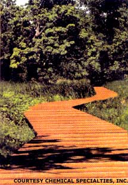

Everyone who's ever been in a high school drama class knows arsenic is a poison. But many people don't realize that most deck and playground pressure-treated lumber has been soaked in arsenic. And now new evidence shows that arsenic is an extremely potent carcinogen.
Contact with arsenic can be through drinking-water systems with high levels of arsenic due to industrial pollution or natural geologic erosion, pressure-treated lumber meant to minimize the effects of water exposure and wood-eating pests.
The EPA should ban arsenic-based CCA treated lumber now that less toxic ACQ treatments are available. - MOTHER
Arsenic content in water systems has been a hot political battle since President George W. Bush froze a Clinton-era pro posal to lower the legal maximum of arsenic from 50 parts per billion to 5 ppb. The Bush administration wanted to review the science on arsenic, which at the time had mainly been done overseas. It was thought the results of those studies exaggerated arsenic's relationship to cancer, but a recent National Academy of Sciences report reveals that arsenic is actually more dangerous than previous studies reported, according to the journal Science.
Arsenic-treated lumber has also been under attack from advocacy organizations like the Environmental Working Group (EWG). Special focus was paid to the lumber's use in playgrounds, where children would be touching it repeatedly and ingesting nearby contaminated soil over a long period of time. A sustained campaign has led to an agreement to provide information on arsenic and chromium (another suspected carcinogen used in treated lumber) at the point of sale, but this doesn't satisfy groups like EWG who feel the language is vague.
Pressure-treated wood that uses a new preservative called ACQ instead of arsenic and chromium (CCA) is available throughout North America. Chemical Specialties, Inc., backs its Preserve and Preserve Plus ACQ lumber with a lifetime guarantee.
Manufacturers and distributors of Preserve and other arsenic-free lumber can be found through the Healthy Building Network's Web site: www.healthybuilding.net. CSI also offers an information hot line: (800) 421-8661.
Mother strongly recommends ACQ instead of CCA if you feel you must use chemically treated lumber.
|
 ACQ pressure-treated lumber provides a healthy alternative to arsenic- and chromium-treated lumber. |
|
|